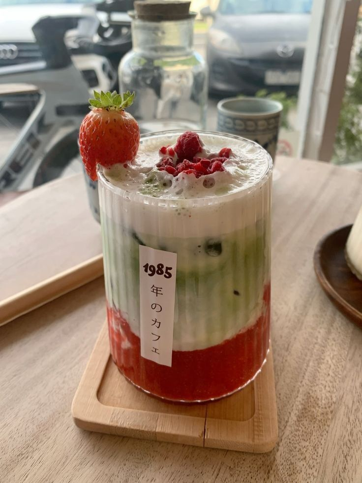

Matcha Cafe Rave!!



313554 likes
• Posted 4 hours ago...
GUUUUUUUYYYSSSSSSS I went to get boba at the place I always go to and get my usual order - my ankles break I literally ended up eating dirt and my drink splattered against everything in the shop. My hair lowkey got soaked and I legit just had to pick myself up and sit in my drink. I WAS SO TEMPTED TO LEAVE AND CRY but I felt so bad that every counter top, wall, and their mother fell victim to my clumsiness. What a waste of $9 #CryingForEternity #SomeoneVenmoMe9Dollars #MyPoorBabyBoba TT I kept apologizing over and over, and I literally was about to get a mountain of paper towel from their bathroom to clean, but THANKFULLY a very kind angel of a human being that worked there told me it was okay and that they’ve had messier messes to clean (not sure how??) and that they will properly mop it up and such. BLESS and shout out to that worker (lets all collectively say “Thank you Jina~”). BUT THATS NOT ALL A VERY VERY HANDSOME MAN (Cha Eun-Woo level I’m talkin here guys) WHO WATCHED THE ENTIRE THING OFFERED TO BUY ME A NEW ONE??!!? He insisted, and wished me a good day. #LifeIsGood #ChaEunWooTalkedToMe #Fate #DoIPropose
Username
Comment left by user
matchalovver2002
this matcha looks delicious!! where is this